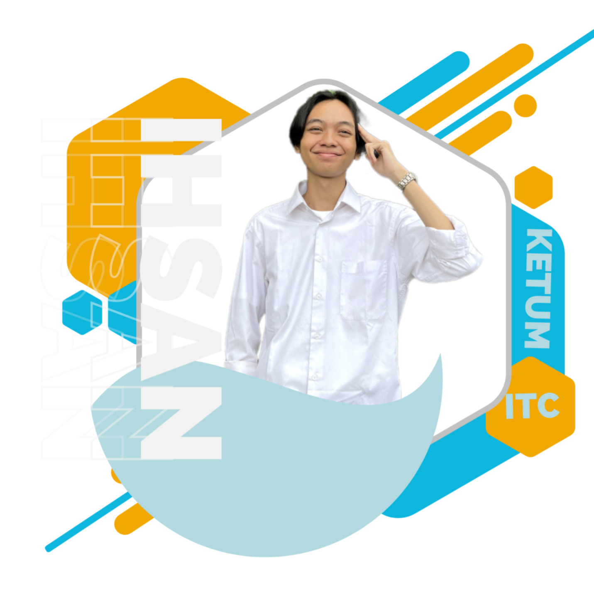

Dies Natalis UKM ITC ke 18
Ini adalah salah satu program kerja dari divisi pengembangan
.png)
Information Technology and Communication MIPA Unsoed
ITC MIPA Unsoed Merupakan sebuah unit kegiatan mahasiswa yang berada di lingkup Fakultas MIPA Unsoed yang bergerak di bidang informasi, teknologi, dan komunikasi serta di bidang Ilmu Pengetahuan dan Teknologi (IPTEK) dimana perkembangan zaman yang begitu pesat mendorong adanya kemajuan dibidang ilmu pengetahuan dan teknologi.
Menjadi Unit Kemahasiswaan terdepan di fakultas MIPA Universitas Jenderal Soedirman dalam mewujudkan atmosfer kampus yang berbasis IPTEK
Mewadahi mahasiswa MIPA Unsoed yang berminat di bidang informasi, teknologi, dan komunikasi. Merintis dan mengembangkan kegiatan=kegiatan UKM ITC MIPA Unsoed yang bersifat edukasi, sosial, dan riset di kalangan mahasiswa MIPA Unsoed dan masyarakat. Meningkatkan kreatifitas, keahlian, dan pengetahuan mahasiswa dalam bidang informasi, teknologi, dan komunikasi. Membina dan mempererat kebersamaan antar anggota UKM ITC MIPA Unsoed. Mengembangkan potensi IPTEK di dalam masyarakat pada umumnya.


UKM ITC MIPA UNSOED merupakan sebuah unit kegiatan mahasiswa yang bergerak di bidang Ilmu Pengetahuan dan Teknologi (IPTEK). ITC mempunyai 5 divisi yaitu pengurus harian, divisi informasi, divisi teknologi, divisi komunikasi, dan divisi pengembangan.
"Kids who have never seen Peace and kids who have never seen War have different values! Those who stand at the top determine what’s wrong and what’s right! This very place is neutral ground! Justice will prevail, you say? But of course it will!!! Whoever wins this war… Becomes Justice!”
Donquixote Doflamingo
Ini adalah beberapa program ITC yang telah terlaksana
Ini adalah salah satu program kerja dari divisi pengembangan
Ini adalah salah satu program kerja dari divisi Teknologi